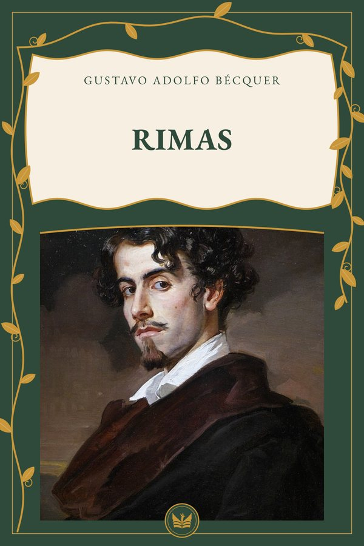

RimasGratis en EPUB y PDF (enlace legal)
Por qué leerlo
Para leer un poema de una sentada y volver a él otro día. El índice permite saltar directamente a cada rima, tanto si ya conoces el número como si quieres recorrer el libro en orden.
Resumen
Setenta y seis poemas sobre la poesía, el amor, el desengaño y la pérdida. La edición de 1885 reúne versos como los de las golondrinas, la pupila azul y el mundo que cabe en una mirada.
Citas
Por una mirada, un mundo;
Poesía... eres tú.
Ver 1 citas más
Volverán las oscuras golondrinas
Valoración moral
6 de 6: Sin inconvenientes. Ver en delibris.org
Libros parecidos
- Cantos de vida y esperanza, Los cisnes y otros poemas · Rubén Darío
- Azul... · Rubén Darío
Más en Poesía
- La Divina Comedia · Dante Alighieri (trad. Manuel Aranda y Sanjuán)
- Laberinto de Fortuna · Juan de Mena
- Orlando furioso · Ludovico Ariosto (trad. Manuel Aranda y Sanjuán)
- Viaje al Parnaso · Miguel de Cervantes
- La gatomaquia · Lope de Vega
- Martín Fierro · José Hernández
.jpg){kind=link}
Texto completo
Índice de la lectura
- Rima I
- Rima II
- Rima III
- Rima IV
- Rima V
- Rima VI
- Rima VII
- Rima VIII
- Rima IX
- Rima X
- Rima XI
- Rima XII
- Rima XIII
- Rima XIV
- Rima XV
- Rima XVI
- Rima XVII
- Rima XVIII
- Rima XIX
- Rima XX
- Rima XXI
- Rima XXII
- Rima XXIII
- Rima XXIV
- Rima XXV
- Rima XXVI
- Rima XXVII
- Rima XXVIII
- Rima XXIX
- Rima XXX
- Rima XXXI
- Rima XXXII
- Rima XXXIII
- Rima XXXIV
- Rima XXXV
- Rima XXXVI
- Rima XXXVII
- Rima XXXVIII
- Rima XXXIX
- Rima XL
- Rima XLI
- Rima XLII
- Rima XLIII
- Rima XLIV
- Rima XLV
- Rima XLVI
- Rima XLVII
- Rima XLVIII
- Rima XLIX
- Rima L
- Rima LI
- Rima LII
- Rima LIII
- Rima LIV
- Rima LV
- Rima LVI
- Rima LVII
- Rima LVIII
- Rima LIX
- Rima LX
- Rima LXI
- Rima LXII
- Rima LXIII
- Rima LXIV
- Rima LXV
- Rima LXVI
- Rima LXVII
- Rima LXVIII
- Rima LXIX
- Rima LXX
- Rima LXXI
- Rima LXXII
- Rima LXXIII
- Rima LXXIV
- Rima LXXV
- Rima LXXVI
Rima I
Yo sé un himno gigante y extraño
Que anuncia en la noche del alma una aurora,
Y estas páginas son de ese himno
Cadencias que el aire dilata en las sombras.
Yo quisiera escribirle, del hombre
Domando el rebelde, mezquino idioma,
Con palabras que fuesen á un tiempo
Suspiros y risas, colores y notas.
Pero en vano es luchar; que no hay cifra
Capaz de encerrarlo, y apenas ¡oh hermosa!
Si, teniendo en mis manos las tuyas,
Pudiera, al oirlo, cantártelo á solas.
Rima II
Saeta que voladora
Cruza, arrojada al azar,
Sin adivinarse dónde
Temblando se clavará;
Hoja que del árbol seca
Arrebata el vendaval,
Sin que nadie acierte el surco
Donde á caer volverá;
Gigante ola que el viento
Riza y empuja en el mar,
Y rueda y pasa, y no sabe
Qué playa buscando va;
Luz que en cercos temblorosos
Brilla, próxima á espirar,
Ignorándose cuál de ellos
El último brillará;
Eso soy yo, que al acaso
Cruzo el mundo, sin pensar
De dónde vengo, ni adónde
Mis pasos me llevarán.
Rima III
Sacudimiento extraño
Que agita las ideas,
Como huracán que empuja
Las olas en tropel;
Murmullo que en el alma
Se eleva y va creciendo,
Como volcán que sordo
Anuncia que va á arder;
Deformes siluetas
De seres imposibles,
Paisajes que aparecen
Como á través de un tul;
Colores que fundiéndose
Remedan en el aire
Los átomos del Iris,
Que nadan en la luz;
Ideas sin palabras,
Palabras sin sentido;
Cadencias que no tienen
Ni ritmo ni compás;
Memorias y deseos
De cosas que no existen;
Accesos de alegría,
Impulsos de llorar;
Actividad nerviosa
Que no halla en qué emplearse;
Sin riendas que le guie
Caballo volador;
Locura que el espíritu
Exalta y enardece;
Embriaguez divina
Del genio creador...
¡Tal es la inspiración!
Gigante voz que el caos
Ordena en el cerebro,
Y entre las sombras hace
La luz aparecer;
Brillante rienda de oro,
Que poderosa enfrena
De la exaltada mente
El volador corcel;
Hilo de luz que en haces
Los pensamientos ata;
Sol que las nubes rompe
Y toca en el zenit;
Inteligente mano,
Que en un collar de perlas
Consigue las indóciles
Palabras reunir;
Armonioso ritmo,
Que con cadencia y número
Las fugitivas notas
Encierra en el compás;
Cincel que el bloque muerde
La estatua modelando,
Y la belleza plástica
Añade á la ideal;
Atmósfera en que giran
Con orden las ideas,
Cual átomos que agrupan
Recóndita atracción;
Raudal en cuyas ondas
Su sed la fiebre apaga;
Oásis que al espíritu
Devuelve su vigor...
¡Tal es nuestra razón!
Con ambas siempre en lucha
Y de ambas vencedor,
Tan sólo el genio puede
A un yugo atar las dos.
Rima IV
No digais que agotado su tesoro,
De asuntos falta, enmudeció la lira:
Podrá no haber poetas; pero siempre
Habrá poesía.
Mientras las ondas de la luz al beso
Palpiten encendidas;
Mientras el sol las desgarradas nubes
De fuego y oro vista;
Mientras el aire en su regazo lleve
Perfumes y armonías;
Mientras haya en el mundo primavera,
¡Habrá poesía!
Mientras la ciencia á descubrir no alcance
Las fuentes de la vida,
Y en el mar ó en el cielo haya un abismo
Que al cálculo resista;
Mientras la humanidad siempre avanzando
No sepa á do camina;
Mientras haya un misterio para el hombre,
¡Habrá poesía!
Mientras sintamos que se alegra el alma,
Sin que los labios rían;
Mientras se llore sin que el llanto acuda
A nublar la pupila;
Mientras el corazón y la cabeza
Batallando prosigan;
Mientras haya esperanzas y recuerdos,
¡Habrá poesía!
Mientras haya unos ojos que reflejen
Los ojos que los miran;
Mientras responda el labio suspirando
Al labio que suspira;
Mientras sentirse puedan en un beso
Dos almas confundidas;
Mientras exista una mujer hermosa,
¡Habrá poesía!
Rima V
Espíritu sin nombre
Indefinible esencia,
Yo vivo con la vida
Sin formas de la idea.
Yo nado en el vacío,
Del sol tiemblo en la hoguera,
Palpito entre las sombras
Y floto con las nieblas.
Yo soy el fleco de oro
De la lejana estrella;
Yo soy de la alta luna
La luz tibia y serena.
Yo soy la ardiente nube
Que en el ocaso ondea;
Yo soy del astro errante
La luminosa estela.
Yo soy nieve en las cumbres,
Soy fuego en las arenas,
Azul onda en los mares,
Y espuma en las riberas.
En el laud soy nota,
Perfume en la violeta,
Fugaz llama en las tumbas,
Y en las ruínas hiedra.
Yo atrueno en el torrente,
Y silbo en la centella,
Y ciego en el relámpago,
Y rujo en la tormenta.
Yo río en los alcores,
Susurro en la alta hierba,
Suspiro en la onda pura,
Y lloro en la hoja seca.
Yo ondulo en los átomos
Del humo que se eleva,
Y al cielo lento sube
En espiral inmensa.
Yo, en los dorados hilos
Que los insectos cuelgan,
Me mezclo entre los árboles
En la ardorosa siesta.
Yo, corro tras las ninfas
Que en la corriente fresca
Del cristalino arroyo
Desnudas juguetean.
Yo, en bosque de corales,
Que alfombran blancas perlas,
Persigo en el Oceano
Las náyades ligeras.
Yo, en las cavernas cóncavas,
Do el sol nunca penetra,
Mezclándome á los gnomos,
Contemplo sus riquezas.
Yo busco de los siglos
las ya borradas huellas,
Y sé de esos imperios
De que ni el nombre queda.
Yo sigo en raudo vértigo
Los mundos que voltean,
Y mi pupila abarca
La creación entera.
Yo sé de esas regiones
A do un rumor no llega
Y dónde informes astros
De vida un soplo esperan.
Yo soy sobre el abismo
El puente que atraviesa;
Yo soy la ignota escala
Que el cielo une á la tierra,
Yo soy el invisible
Anillo que sujeta
El mundo de la forma
Al mundo de la idea.
Yo, en fin, soy ese espíritu,
Desconocida esencia,
Perfume misterioso
De que es vaso el poeta.
Rima VI
Como la brisa que la sangre orea
Sobre el oscuro campo de batalla,
Cargada de perfumes y armonías
En el silencio de la noche vaga;
Símbolo del dolor y la ternura,
Del bardo inglés en el horrible drama,
La dulce Ofelia, la razón perdida,
Cogiendo flores y cantando pasa.
Rima VII
Del salón en el ángulo oscuro,
De su dueño tal vez olvidada,
Silenciosa y cubierta de polvo
Veíase el arpa.
¡Cuánta nota dormía en sus cuerdas,
Como el pájaro duerme en las ramas,
Esperando la mano de nieve
Que sabe arrancarla!
¡Ay! pensé; ¡cuántas veces el genio
Así duerme en el fondo del alma,
Y una voz, como Lázaro, espera
Que le diga: «¡Levántate y anda!»
Rima VIII
Cuando miro el azul horizonte
Perderse á lo lejos,
Al través de una gasa de polvo
Dorado é inquieto,
Me parece posible arrancarme
Del mísero suelo,
Y flotar con la niebla dorada
En átomos leves
Cual ella deshecho.
Cuando miro de noche en el fondo
Oscuro del cielo
Las estrellas temblar, como ardientes
Pupilas de fuego,
Me parece posible á do brillan
Subir en un vuelo,
Y anegarme en su luz, y con ellas
En lumbre encendido
Fundirme en un beso.
En el mar de la duda en que bogo
Ni aún sé lo que creo;
¡Sin embargo, estas ansias me dicen
Que yo llevo algo
Divino aquí dentro!...
Rima IX
Besa el aura que gime blandamente
Las leves ondas que jugando riza;
El sol besa á la nube en Occidente
Y de púrpura y oro la matiza;
La llama en derredor del tronco ardiente
Por besar á otra llama se desliza,
Y hasta el sáuce, inclinándose á su peso,
Al río que le besa, vuelve un beso.
Rima X
Los invisibles átomos del aire
En derredor palpitan y se inflaman;
El cielo se deshace en rayos de oro;
La tierra se estremece alborozada;
Oigo flotando en olas de armonía
Rumor de besos y batir de alas;
Mis párpados se cierran... ¿Qué sucede?
—¡Es el amor que pasa!
Rima XI
Yo soy ardiente, yo soy morena,
Yo soy el símbolo de la pasión;
De ansia de goces mi alma está llena.
— ¿A mí me buscas? — No es á tí; no.
—Mi frente es pálida; mis trenzas de oro:
Puedo brindarte dichas sin fin;
Yo de ternura guardo un tesoro.
—¿A mí me llamas?—No; no es á tí.
—Yo soy un sueño, un imposible,
Vano fantasma de niebla y luz;
Soy incorpórea, soy intangible;
No puedo amarte.—¡Oh, ven; ven tú!
Rima XII
Porque son, niña, tus ojos
Verdes como el mar, te quejas:
Verdes los tienen las náyades,
Verdes los tuvo Minerva,
Y verdes son las pupilas
De las hurís del profeta.
El verde es gala y ornato
Del bosque en la primavera.
Entre sus siete colores
Brillante el Iris lo ostenta.
Las esmeraldas son verdes,
Verde el color del que espera,
Y las ondas del Oceano,
Y el laurel de los poetas.
Es tu mejilla temprana
Rosa de escarcha cubierta,
En que el carmín de los pétalos
Se ve al través de las perlas.
Y sin embargo,
Sé que te quejas,
Porque tus ojos
Crees que la afean:
Pues no lo creas;
Que parecen tus pupilas,
Húmedas, verdes é inquietas,
Tempranas hojas de almendro,
Que al soplo del aire tiemblan.
Es tu boca de rubíes
Purpúrea granada abierta,
Que en el estío convida
A apagar la sed en ella.
Y sin embargo,
Sé que te quejas,
Porque tus ojos
Crees que la afean:
Pues no lo creas;
Que parecen, si enojada
Tus pupilas centellean,
Las olas del mar que rompen
En las cantábricas peñas.
Es tu frente que corona
Crespo el oro en ancha trenza,
Nevada cumbre en que el día
Su postrera luz refleja.
Y sin embargo,
Sé que te quejas,
Porque tus ojos
Crees que la afean:
Pues no lo creas;
Que, entre las rubias pestañas,
Junto á las sienes, semejan
Broches de esmeralda y oro,
Que un blanco armiño sujetan.
Rima XIII
Tu pupila es azul, y cuando ríes,
Su claridad suave me recuerda
El trémulo fulgor de la mañana
Que en el mar se refleja.
Tu pupila es azul, y cuando lloras,
Las trasparentes lágrimas en ella
Se me figuran gotas de rocío
Sobre una violeta.
Tu pupila es azul, y si en su fondo
Como un punto de luz radia una idea,
Me parece en el cielo de la tarde
¡Una perdida estrella!
Rima XIV
Te ví un punto, y, flotando ante mis ojos
La imagen de tus ojos se quedó,
Como la mancha oscura, orlada en fuego,
Que flota y ciega, si se mira al sol.
Adonde quiera que la vista fijo,
Torno á ver sus pupilas llamear;
Mas no te encuentro á tí; que es tu mirada:
Unos ojos, los tuyos, nada más.
De mi alcoba en el ángulo los miro
Desasidos fantásticos lucir:
Cuando duermo, los siento que se ciernen
De par en par abiertos sobre mí.
Y sé que hay fuegos fátuos que en la noc
Llevan al caminante á perecer:
Yo me siento arrastrado por tus ojos,
Pero adonde me arrastran, no lo sé.
Rima XV
Cendal flotante de leve bruma,
Rizada cinta de blanca espuma,
Rumor sonoro
De arpa de oro,
Beso del áura, onda de luz,
Eso eres tú.
Tú, sombra aérea que, cuantas veces
Voy á tocarte, te desvaneces
Como la llama, como el sonido,
Como la niebla, como el gemido
Del lago azul.
En mar sin playas onda sonante,
En el vacío cometa errante,
Largo lamento
Del ronco viento,
Ansia perpetua de algo mejor,
Eso soy yo.
¡Yo, que á tus ojos en mi agonía
Los ojos vuelvo de noche y día;
Yo, que incansable corro y demente
Tras una sombra, tras la hija ardiente
De una visión!
Rima XVI
Si al mecer las azules campanillas
De tu balcón,
Crees que suspirando pasa el viento
Murmurador,
Sabe que, oculto entre las verdes hojas,
Suspiro yo.
Si al resonar confuso á tus espaldas
Vago rumor,
Crees que por tu nombre te ha llamado
Lejana voz,
Sabe que, entre las sombras que te cercan,
Te llamo yo.
Si se turba medroso en la alta noche
Tu corazón,
Al sentir en tus labios un aliento
Abrasador,
Sabe que, aunque invisible, al lado tuyo
Respiro yo.
Rima XVII
Hoy la tierra y los cielos me sonrien,
Hoy llega al fondo de mi alma el sol;
Hoy la he visto... la he visto y me ha mirado...
¡Hoy creo en Dios!
Rima XVIII
Fatigada del baile,
Encendido el color, breve el aliento,
Apoyada en mi brazo,
Del salón se detuvo en un extremo.
Entre la leve gasa
Que levantaba el palpitante seno,
Una flor se mecía
En compasado y dulce movimiento.
Como en cuna de nácar
Que empuja el mar y que acaricia el céfiro,
Tal vez allí dormía
Al soplo de sus labios entreabiertos.
—¡Oh! ¿Quién así, pensaba,
Dejar pudiera deslizarse el tiempo?
¡Oh, si las flores duermen,
Qué dulcísimo sueño!
Rima XIX
Cuando sobre el pecho inclinas
La melancólica frente,
Una azucena tronchada
Me pareces.
Porque al darte la pureza
De que es símbolo celeste,
Como á ella, te hizo Dios
De oro y nieve.
Rima XX
Sabe, si alguna vez tus labios rojos
Quema invisible atmósfera abrasada,
Que el alma que hablar puede con los ojos,
También puede besar con la mirada.
Rima XXI
¿Qué es poesía? dices mientras clavas
En mi pupila tu pupila azul;
¿Qué es poesía? ¿Y tú me lo proguntas?
Poesía... eres tú.
Rima XXII
¿Cómo vive esa rosa que has prendido
Junto á tu corazón?
Nunca hasta ahora contemplé en la tierra
Sobre el volcán la flor.
Rima XXIII
Por una mirada, un mundo;
Por una sonrisa, un cielo;
Por un beso... ¡yo no sé
Qué te diera por un beso!
Rima XXIV
Dos rojas lenguas de fuego
Que, á un mismo tronco enlazadas,
Se aproximan, y al besarse
Forman una sola llama;
Dos notas que del laud
A un tiempo la mano arranca,
Y en el espacio se encuentran
Y armoniosas se abrazan;
Dos olas que vienen juntas
A morir sobre una playa,
Y que al romper se coronan
Con un penacho de plata;
Dos jirones de vapor
Que del lago se levantan,
Y al juntarse allí en el cielo
Forman una nube blanca;
Dos ideas que al par brotan,
Dos besos que á un tiempo estallan,
Dos ecos que se confunden...
Eso son nuestras dos almas.
Rima XXV
Cuando en la noche te envuelven
Las alas de tul del sueño,
Y tus tendidas pestañas
Semejan arcos de ébano,
Por escuchar los latidos
De tu corazón inquieto,
Y reclinar tu dormida
Cabeza sobre mi pecho,
Diera, alma mía,
Cuanto poseo:
La luz, el aire
Y el pensamiento!
Cuando se clavan tus ojos
En un invisible objeto,
Y tus labios ilumina
De una sonrisa el reflejo;
Por leer sobre tu frente
El callado pensamiento
Que pasa como la nube
Del mar sobre el ancho espejo,
Diera, alma mía,
Cuanto deseo:
La fama, el oro,
La gloria, el genio!
Cuando enmudece tu lengua,
Y se apresura tu aliento,
Y tus mejillas se encienden,
Y entornas tus ojos negros;
Por ver entre sus pestañas
Brillar con húmedo fuego
La ardiente chispa que brota
Del volcán de los deseos,
Diera, alma mía,
Por cuanto espero,
La fe, el espíritu,
La tierra, el cielo!
Rima XXVI
Voy contra mi interés al confesarlo;
Pero yo, amada mía,
Pienso, cual tú, que una oda sólo es buena
De un billete del Banco al dorso escrita.
No faltará algún necio que al oirlo
Se haga cruces y diga:
«Mujer al fin del siglo diez y nueve,
Material y prosáica...» ¡Bobería!
¡Voces que hacen correr cuatro poetas
Que en invierno se embozan con la lira!
¡Ladridos de los perros á la luna!
Tú sabes y yo sé que en esta vida,
Con genio, es muy contado quien la escribe
Y con oro, cualquiera hace poesía.
Rima XXVII
Despierta, tiemblo al mirarte;
Dormida me atrevo á verte;
Por eso, alma de mi alma,
Yo velo mientras tú duermes.
Despierta, ríes; y al reir, tus labios
Inquietos me parecen
Relámpagos de grana que serpean
Sobre un cielo de nieve.
Despierta, los extremos de tu boca
Pliega sonrisa leve,
Suave como el rastro luminoso
Que deja un sol que muere...
—¡Duerme!
Despierta, miras, y al mirar, tus ojos
Húmedos resplandecen
Como la onda azul, en cuya cresta
Chispeando el sol hiere.
Al través de tus párpados, dormida,
Tranquilo fulgor viertes,
Cual derrama de luz templado rayo
Lámpara transparente...
—¡Duerme!
Despierta, hablas, y al hablar, vibrantes
Tus palabras parecen
Lluvia de perlas que en dorada copa
Se derrama á torrentes.
Dormida, en el murmullo de tu aliento
Acompasado y tenue,
Escucho yo un poema , que mi alma
Enamorada entiende...
—¡Duerme!
Sobre el corazón la mano
Me he puesto, porque no suene
Su latido, y de la noche
Turbe la calma solemne.
De tu balcón las persianas
Cerré ya, porque no entre
El resplandor enojoso
De la aurora, y te despierte...
—¡Duerme!
Rima XXVIII
Cuando entre la sombra oscura
Perdida una voz murmura
Turbando su triste calma,
Si en el fondo de mi alma
La oigo dulce resonar;
Díme: ¿es que el viento en sus giros
Se queja, ó que tus suspiros
Me hablan de amor al pasar?
Cuando el sol en mi ventana
Rojo brilla á la mañana,
Y mi amor tu sombra evoca,
Si en mi boca de otra boca
Sentir creo la impresión;
Díme: ¿es que ciego deliro,
Ó que un beso en un suspiro
Me envía tu corazón?
Si en el luminoso día
Y en la alta noche sombría;
Si en todo cuanto rodea
Al alma que te desea
Te creo sentir y ver;
Díme: ¿es que toco y respiro
Soñando, ó que en un suspiro
Me das tu aliento á beber?
Rima XXIX
Sobre la falda tenía
El libro abierto;
En mi mejilla tocaban
Sus rizos negros;
No veíamos las letras
Ninguno, creo;
Mas guardábamos ambos
Hondo silencio.
¿Cuanto duró? Ni aun entonces
Pude saberlo;
Sólo sé que no se oía
Más que el aliento,
Que apresurado escapaba
Del labio seco.
Sólo sé que nos volvimos
Los dos á un tiempo,
Y nuestros ojos se hallaron,
Y sonó un beso.
. . . . . . . . . . . .
. . . . . . . . . . . .
Creación de Dante era el libro,
Era su Infierno.
Cuando á él bajamos los ojos,
Yo dije trémulo:
¿Comprendes ya que un poema
Cabe en un verso?
Y ella respondió encendida:
—¡Ya lo comprendo!
Rima XXX
Asomaba á sus ojos una lágrima
y á mi labio una frase de perdón;
Habló el orgullo y se enjugó su llanto,
Y la frase en mis labios espiró.
Yo voy por un camino, ella por otro;
Pero al pensar en nuestro mutuo amor,
Yo digo aún: ¿por qué callé aquel día?
Y ella dirá: ¿por qué no lloré yo?
Rima XXXI
Nuestra pasión fué un trágico sainete
En cuya absurda fábula
Lo cómico y lo grave confundidos
Risas y llanto arrancan.
Pero fué lo peor de aquella historia
Que al fin de la jornada,
A ella tocaron lágrimas y risas,
Y á mí sólo las lágrimas!
Rima XXXII
Pasaba arrolladora en su hermosura,
Y el paso la dejé;
Ni aun á mirarla me volví, y no obstante
Algo á mi oído murmuró: «esa es».
¿Quién reunió la tarde á la mañana?
Lo ignoro: sólo sé
Que en una breve noche de verano
Se unieron los crepúsculos, y... «fué».
Rima XXXIII
Es cuestión de palabras, y no obstante
Ni tú ni yo jamás,
Después de lo pasado, convendremos
En quién la culpa está.
¡Lástima que el amor un diccionario
No tenga donde hallar
Cuándo el orgullo es simplemente orgullo,
Y cuándo es dignidad!
Rima XXXIV
Cruza callada, y son sus movimientos
Silenciosa armonía:
Suenan sus pasos y, al sonar, recuerdan
Del himno alado la cadencia rítmica.
Los ojos entreabre, aquellos ojos
Tan claros como el día;
Y la tierra y el cielo, cuanto abarcan,
Arden con nueva luz en sus pupilas.
Ríe, y su carcajada tiene notas
Del agua fugitiva;
Llora, y es cada lágrima un poema
De ternura infinita.
Ella tiene la luz, tiene el perfume,
El color y la línea,
La forma, engendradora de deseos,
La expresión, fuente eterna de poesía.
¿Que es estúpida?... ¡Bah! mientras, callando
Guarde oscuro el enigma,
Siempre valdrá, á mi ver, lo que ella calla
Más que lo que cualquiera otra me diga.
Rima XXXV
¡No me admiró tu olvido! Aunque de un día
Me admiró tu cariño mucho más;
Porque lo que hay en mí que vale algo,
Eso... ¡ni lo pudiste sospechar!
Rima XXXVI
de nuestros agravios en un libro
Se escribiese la historia,
Y se borrase en nuestras almas cuanto
Se borrase en sus hojas;
Te quiero tanto aún, dejó en mi pecho
Tu amor huellas tan hondas,
Que sólo con que tú borrases una,
Las borraba yo todas!
Rima XXXVII
Antes que tú me moriré: escondido
En las entrañas ya
El hierro llevo con que abrió tu mano
La ancha herida mortal!
Antes que tú me moriré: y mi espíritu
En su empeño tenaz,
Sentándose á las puertas de la muerte,
Allí te esperará.
Con las horas los días, con los días
Los años volarán,
Y á aquella puerta llamarás al cabo...
¿Quién deja de llamar?
Entonces, que tu culpa y tus despojos
La tierra guardará,
Lavándote en las ondas de la muerte
Como en otro Jordán;
Allí, donde el murmullo de la vida
Temblando á morir va,
Como la ola que á la playa viene
Silenciosa á espirar;
Allí, donde el sepulcro que se cierra
Abre una eternidad...
Todo cuanto los dos hemos callado
Lo tenemos que hablar!
Rima XXXVIII
Los suspiros son aire, y van al aire.
Las lágrimas son agua, y van al mar.
Díme, mujer: cuando el amor se olvida,
¿Sabes tú adónde va?
Rima XXXIX
¿A qué me lo decís? lo sé: es mudable,
Es altanera y vana y caprichosa;
Antes que el sentimiento de su alma,
Brotará el agua de la estéril roca.
Sé que en su corazón, nido de sierpes,
No hay una fibra que al amor responda;
Que es una estatua inanimada... pero...
Es tan hermosa!
Rima XL
Su mano entre mis manos,
Sus ojos en mis ojos,
La amorosa cabeza
Apoyada en mi hombro,
¡Dios sabe cuántas veces
Con paso perezoso,
Hemos vagado juntos
Bajo los altos olmos,
Que de su casa prestan
Misterio y sombra al pórtico!
Y ayer... un año apenas
Pasado como un soplo,
¡Con qué exquisita gracia,
Con qué admirable aplomo,
Me dijo, al presentarnos
Un amigo oficioso:
«—Creo que en alguna parte
He visto á usted.—» ¡Ah! bobos,
Que sois de los salones
Comadres de buen tono,
Y andáis por allí á caza
De galantes embrollos;
¡Qué historia habéis perdido!
¡Qué manjar tan sabroso
Para ser devorado
Sotto voce en un corro,
Detrás del abanico
De plumas y de oro!
. . . . . . . . .
¡Discreta y casta luna,
Copudos y altos olmos,
Paredes de su casa,
Umbrales de su pórtico,
Callad, y que el secreto
No salga de vosotros!
Callad; que por mi parte
Lo he olvidado todo:
Y ella... ella... ¡no hay máscara
Semejante á su rostro!
Rima XLI
Tú eras el huracán, y yo la alta
Torre que desafía su poder;
¡Tenías que estrellarte ó abatirme!...
¡No pudo ser!
Tú eras el Oceano, y yo la enhiesta
Roca que firme aguarda su vaivén:
¡Tenías que romperte ó que arrancarme!...
¡No pudo ser!
Hermosa tú, yo altivo; acostumbrados
Uno á arrollar, el otro á no ceder;
La senda estrecha, inevitable el choque...
¡No pudo ser!
Rima XLII
Cuando me lo contaron sentí el frío
De una hoja de acero en las entrañ
Me apoyé contra el muro, y un instante
La conciencia perdí de donde estaba.
Cayó sobre mi espíritu la noche;
En ira y en piedad se anegó el alma...
¡Y entonces comprend por qué se llora,
Y entonces comprendí por qué se mata!
Pasó la nube de dolor... con pena
Logré balbucear breves palabras...
¿Quién me dió la noticia?... Un fiel amigo...
¡Me hacía un gran favor!... Le dí las gracias.
Rima XLIII
Dejé la luz á un lado, y en el borde
De la revuelta cama me senté,
Mudo, sombrío, la pupila inmóvil
Clavada en la pared.
¿Qué tiempo estuve así? No sé: al dejarme
La embriaguez horrible del dolor,
Espiraba la luz, y en mis balcones
Reía el sol.
Ni sé tampoco en tan terribles horas
En qué pensaba ó qué pasó por mí;
Sólo recuerdo que lloré y maldije,
Y que en aquella noche envejecí.
Rima XLIV
Como en un libro abierto
Leo de tus pupilas en el fondo;
¿A qué fingir el labio
Risas que se desmienten con los ojos?
¡Llora! No te avergüences
De confesar que me quisiste un poco.
¡Llora! Nadie nos mira.
Ya ves; yo soy un hombre... ¡y también lloro!
Rima XLV
En la clave del arco mal seguro,
Cuyas piedras el tiempo enrojeció,
Obra de cincel rudo, campeaba
El gótico blasón.
Penacho de su yelmo de granito,
La hiedra que colgaba en derredor
Daba sombra al escudo, en que una mano
Tenía un corazón.
A contemplarle en la desierta plaza
Nos paramos los dos:
Y «ése, me dijo, es el cabal emblema
De mi constante amor».
¡Ay! es verdad lo que me dijo entonces:
Verdad que el corazón
Lo llevará en la mano... en cualquier parte...
Pero en el pecho, no.
Rima XLVI
Me ha herido recatándose en las sombras,
Sellando con un beso su traición.
Los brazos me echó al cuello, y por la espalda
Partióme á sangre fría el corazón.
Y ella prosigue alegre su camino,
Feliz, risueña, impávida; ¿y por qué?
Porque no brota sangre de la herida...
¡Porque el muerto está en pie!
Rima XLVII
Yo me he asomado á las profundas simas
De la tierra y del cielo,
Y les he visto el fin ó con los ojos,
O con el pensamiento.
Mas ¡ay! de un corazón llegué al abismo,
Y me incliné por verlo,
Y mi alma y mis ojos se turbaron:
¡Tan hondo era y tan negro!
Rima XLVIII
Como se arranca el hierro de una herida
Su amor de las entrañas me arranqué,
Aunque sentí, al hacerlo, que la vida
Me arrancaba con él.
Del altar que la alcé en el alma mía
La voluntad su imagen arrojó,
Y la luz de la fe que en ella ardía
Ante el ara desierta se apagó.
Aun para combatir mi firme empeño
Viene á mi mente su visión tenaz...
¡Cuando podré dormir con ese sueño
En que acaba el soñar!
Rima XLIX
Alguna vez la encuentro por el mundo
Y pasa junto á mí:
Y pasa sonriéndose, y yo digo:
¿Cómo puede reir?
Luego asoma á mi labio otra sonrisa,
Máscara del dolor,
Y entonces pienso:—¡Acaso ella se ríe
Como me río yo!
Rima L
Lo que el salvaje que con torpe mano
Hace de un tronco á su capricho un dios,
Y luego ante su obra se arrodilla,
Eso hicimos tú y yo.
Rima LI
De lo poco de vida que me resta
Diera con gusto los mejores años,
Por saber lo que á otros
De mí has hablado.
Y esta vida mortal... y de la eterna
Lo que me toque, si me toca algo,
Por saber lo que á solas
De mí has pensado.
Rima LII
Olas gigantes que os rompéis bramando
En las playas desiertas y remotas,
Envuelto entre la sábana de espumas,
Llevadme con vosotras!
Ráfagas de huracán, que arrebatáis
Del alto bosque las marchitas hojas,
Arrastrado en el ciego torbellino,
Llevadme con vosotras!
Nubes de tempestad, que rompe el rayo
Y en fuego ornáis las desprendidas orlas,
Arrebatado entre la niebla oscura,
Llevadme con vosotras!
Llevadme, por piedad, adonde el vértigo
Con la razón me arranque la memoria...
¡Por piedad!... ¡Tengo miedo de quedarme
Con mi dolor á solas!
Rima LIII
Volverán las oscuras golondrinas
En tu balcón sus nidos á colgar,
Y, otra vez, con el ala á sus cristales
Jugando llamarán.
Pero aquellas que el vuelo refrenaban
Tu hermosura y mi dicha á contemplar,
Aquellas que aprendieron nuestros nombres...
Esas... ¡no volverán!
Volverán las tupidas madreselvas
De tu jardín las tapias á escalar,
Y otra vez á la tarde, aun más hermosas,
Sus flores se abrirán;
Pero aquéllas, cuajadas de rocío,
Cuyas gotas mirábamos temblar
Y caer, como lágrimas del día...
Esas... ¡no volverán!
Volverán del amor en tus oídos
Las palabras ardientes á sonar;
Tu corazón de su profundo sueño
Tal vez despertará;
Pero mudo y absorto y de rodillas,
Como se adora á Dios ante su altar,
Como yo te he querido... desengáñate,
Así no te querrán!
Rima LIV
Cuando volvemos las fugaces horas
Del pasado á evocar,
Temblando brilla en sus pestañas negras
Una lágrima pronta á resbalar.
Y al fin resbala, y cae como gota
De rocío, al pensar
Que, cual hoy por ayer, por hoy mañana,
Volveremos los dos á suspirar.
Rima LV
Entre el discorde estruendo de la orgía
Acarició mi oído,
Como nota de música lejana,
El eco de un suspiro.
El eco de un suspiro que conozco,
Formado de un aliento que he bebido,
Perfume de una flor, que oculta crece
En un claustro sombrío.
Mi adorada de un día, cariñosa,
—¿En que piensas? me dijo..
—En nada...—¿En nada, y lloras?—Es que tengo
Alegre la tristeza y triste el vino.
Rima LVI
Hoy como ayer, mañana como hoy,
Y siempre igual!
Un cielo gris, un horizonte eterno,
Y andar... andar!
Moviéndose á compás, como una estúpida
Máquina, el corazón:
La torpe inteligencia del cerebro,
Dormida en un rincón.
El alma, que ambiciona un paraíso,
Buscándole sin fe;
Fatiga sin objeto, ola que rueda
Ignorando por qué!
Voz que incesante con el mismo tono
Canta el mismo cantar;
Gota de agua monótona que cae,
Y cae sin cesar!
Así van deslizándose los días
Unos de otros en pos,
Hoy lo mismo que ayer... y todos ellos
Sin goce ni dolor.
¡Ay! á veces me acuerdo suspirando
Del antiguo sufrir...
Amargo es el dolor; pero siquiera,
Padecer es vivir!
Rima LVII
Este armazón de huesos y pellejo,
De pasear una cabeza loca
Cansado se halla al fin, y no lo extraño;
Pues, aunque es la verdad que no soy viejo,
De la parte de vida que me toca
En la vida del mundo, por mi daño
He hecho un uso tal, que juraría
Que he condensado un siglo en cada día.
Así, aunque ahora muriera,
No podría decir que no he vivido;
Que el sayo, al parecer nuevo por fuera,
Conozco que por dentro ha envejecido.
Ha envejecido, sí; ¡pese á mi estrella!
Harto lo dice ya mi afán doliente;
Que hay dolor que al pasar, su horrible huella
Graba en el corazón, si no en la frente.
Rima LVIII
¿Quieres que de ese néctar delicioso
No te amargue la hez?
Pues aspírale, acércale á tus labios,
Y déjale después.
¿Quieres que conservemos una dulce
Memoria de este amor?
Pues amémonos hoy mucho, y mañana
Digámonos ¡adiós!
Rima LIX
Yo sé cual el objeto
De tus suspiros es;
Yo conozco la causa de tu dulce
Secreta languidez.
¿Te ríes?... Algún día
Sabrás, niña, por qué;
Tú acaso lo sospechas,
Y yo lo sé.
Yo sé lo que tú sueñas,
Y lo que en sueños ves;
Como en un libro puedo lo que callas
En tu frente leer.
¿Te ríes?... Algún día
Sabrás, niña, por qué;
Tú acaso lo sospechas,
Y yo lo sé.
Yo sé por qué sonríes
Y lloras á la vez:
Yo penetro en los senos misteriosos
De tu alma de mujer.
¿Te ríes?... Algún día
Sabrás, niña, por qué;
Mientras tú sientes mucho y nada sabes,
Yo, que no siento ya, todo lo sé.
Rima LX
Mi vida es un erial;
Flor que toco se deshoja;
Que en mi camino fatal,
Alguien va sembrando el mal
Para que yo lo recoja.
Rima LXI
Al ver mis horas de fiebre
É insomnio lentas pasar,
A la orilla de mi lecho,
¿Quién se sentará?
Cuando la trémula mano
Tienda, próximo á espirar,
Buscando una mano amiga,
¿Quién la estrechará?
Cuando la muerte vidríe
De mis ojos el cristal,
Mis párpados aún abiertos,
¿Quién los cerrará?
Cuando la campana suene
(Si suena en mi funeral),
Una oración al oirla,
¿Quién murmurará?
Cuando mis pálidos restos
Oprima la tierra ya,
Sobre la olvidada fosa,
¿Quién vendrá á llorar?
¿Quién, en fin, al otro día,
Cuando el sol vuelva á brillar,
De que pasé por el mundo,
¿Quién se acordará?
Rima LXII
Primero es un albor trémulo y vago,
Raya de inquieta luz que corta el mar;
Luego chispea y crece y se dilata
En ardiente explosión de claridad.
La brilladora luz es la alegría,
La temerosa sombra es el pesar:
¡Ay! en la oscura noche de mi alma,
¿Cuándo amanecerá?
Rima LXIII
Como enjambre de abejas irritadas,
De un oscuro rincón de la memoria
Salen á perseguirme los recuerdos
De las pasadas horas.
Yo los quiero ahuyentar. ¡Esfuerzo inútil!
Me rodean, me acosan,
Y unos tras otros á clavarme vienen
El agudo aguijón que el alma encona.
Rima LXIV
Como guarda el avaro su tesoro,
Guardaba mi dolor;
Yo quería probar que hay algo eterno
A la que eterno me juró su amor.
Mas hoy le llamo en vano, y oigo al tiempo
Que le agotó, decir:
¡Ah, barro miserable, eternamente
No podrás ni aun sufrir!
Rima LXV
Llegó la noche y no encontré un asilo;
¡Y tuve sed!... Mis lágrimas bebí;
¡Y tuve hambre! ¡Los hinchados ojos
Cerré para morir!
¡Estaba en un desierto! Aunque á mi oído
De las turbas llegaba el ronco hervir,
Yo era huérfano y pobre... ¡El mundo estaba
Desierto... para mí!
Rima LXVI
¿De dónde vengo?... El más horrible y áspero
De los senderos busca;
Las huellas de unos pies ensangrentados
Sobre la roca dura;
Los despojos de un alma hecha jirones
En las zarzas agudas;
Te dirán el camino
que conduce á mi cuna.
¿Adónde voy? El más sombrío y triste
De los páramos cruza;
Valle de eternas nieves y de eternas
Melancólicas brumas.
En donde esté una piedra solitaria
Sin inscripción alguna,
Donde habite el olvido,
Allí estará mi tumba.
Rima LXVII
¡Qué hermoso es ver el día
Coronado de fuego levantarse,
Y á su beso de lumbre
Brillar las olas y encenderse el aire!
¡Qué hermoso es tras la lluvia
Del triste otoño en la azulada tarde,
De las húmedas flores
El perfume aspirar hasta saciarse!
¡Qué hermoso es cuando en copos
La blanca nieve silenciosa cae,
De las inquietas llamas
Ver las rojizas lenguas agitarse!
¡Qué hermoso es cuando hay sueño
Dormir bien... y roncar como un sochantre...
Y comer... y engordar!... ¡y qué desgracia
Que esto sólo no baste!
Rima LXVIII
No sé lo que he soñado
En la noche pasada;
Triste, muy triste debió ser el sueño,
Pues despierto la angustia me duraba.
Noté, al incorporarme,
Húmeda la almohada,
Y por primera vez sentí, al notarlo,
De un amargo placer henchirse el alma.
Triste cosa es el sueño
Que llanto nos arranca;
Mas tengo en mi tristeza una alegría...
¡Sé que aún me quedan lágrimas!
Rima LXIX
Al brillar un relámpago nacemos,
Y aún dura su fulgor cuando morimos:
¡Tan corto es el vivir!
La gloria y el amor tras que corremos,
Sombras de un sueño son que perseguimos:
¡Despertar es morir!
Rima LXX
¡Cuántas veces al pie de las musgosas
Paredes que la guardan,
Oí la esquila que al mediar la noche
A los maitines llama!
¡Cuántas veces trazó mi triste sombra
La luna plateada,
Junto á la del ciprés, que de su huerto
Se asoma por las tapias!
Cuando en sombras la iglesia se envolvía,
De su ojiva calada
¡Cuántas veces temblar sobre los vidrios
Ví el fulgor de la lámpara!
Aunque el viento en los ángulos oscuros
De la torre silbara,
Del coro entre las voces percibía
Su voz vibrante y clara.
En las noches de invierno, si un medroso
Por la desierta plaza
Se atrevía á cruzar, al divisarme
El paso aceleraba.
Y no faltó una vieja que en el torno
Dijese á la mañana,
Que de algún sacristán muerto en pecado
Acaso era yo el alma.
A oscuras conocía los rincones
Del atrio y la portada;
De mis pies las hortigas que allí crecen
Las huellas tal vez guardan.
Los buhos que espantados me seguían
Con sus ojos de llamas,
Llegaron á mirarme con el tiempo
Como á un buen camarada.
A mi lado sin miedo los reptiles
Se movían á rastras;
Hasta los mudos Santos de granito
Ví que me saludaban!
Rima LXXI
No dormía; vagaba en ese limbo
En que cambian de forma los objetos,
Misteriosos espacios que separan
La vigilia del sueño.
Las ideas, que en ronda silenciosa
Daban vueltas en torno á mi cerebro,
Poco á poco en su danza se movían
Con un compás más lento.
De la luz que entra al alma por los ojos
Los párpados velaban al reflejo,
Mas otra luz el mundo de visiones
Alumbraba por dentro.
En este punto resonó en mi oído
Un rumor semejante al que en el templo
Vaga confuso, al terminar los fieles
Con un Amén sus rezos.
Y oí como una voz delgada y triste
Que por mi nombre me llamó á lo lejos,
Y sentí olor de cirios apagados,
De humedad y de incienso.
. . . . . . . . . . . . . . . .
. . . . . . . . . . . . . . . .
Entró la noche, y del olvido en brazos
Caí, cual piedra, en su profundo seno:
Dormí, y al despertar exclamé: «¡Alguno
Que yo quería ha muerto!»
Rima LXXII
PRIMERA VOZ
—Las ondas tienen vaga armonía,
Las violetas suave olor,
Brumas de plata la noche fría,
Luz y oro el día,
Yo algo mejor:
¡Yo tengo Amor!
SEGUNDA VOZ
—Aura de aplausos, nube radiosa,
Ola de envidia que besa el pie,
Isla de sueños donde reposa
El alma ansiosa,
¡Dulce embriaguez
La Gloria es!
TERCERA VOZ
—Ascua encendida es el tesoro,
Sombra que huye la vanidad.
Todo es mentira: la gloria, el oro.
Lo que yo adoro
Sólo es verdad:
¡La Libertad!
. . . . . . . . . . . . .
Así los barqueros pasaban cantando
La eterna canción,
Y al golpe del remo saltaba la espuma
Y heríala el sol.
¿Te embarcas? gritaban; y yo sonriendo
Les dije al pasar:
—Ha tiempo lo hice; por cierto que aún tengo
La ropa en la playa tendida á secar.
Rima LXXIII
Cerraron sus ojos
Que aún tenía abiertos;
Taparon su cara
Con un blanco lienzo;
Y unos sollozando,
Otros en silencio,
De la triste alcoba
Todos se salieron.
La luz, que en un vaso
Ardía en el suelo,
Al muro arrojaba
La sombra del lecho;
Y entre aquella sombra
Veíase á intérvalos,
Dibujarse rígida
La forma del cuerpo.
Despertaba el día,
Y á su albor primero
Con sus mil ruidos
Despertaba el pueblo.
Ante aquel contraste
De vida y misterios,
De luz y tinieblas,
Medité un momento:
«¡Dios mío, qué solos
se quedan los muertos!!»
De la casa en hombros
Lleváronla al templo,
Y en una capilla
Dejaron el féretro.
Allí rodearon
Sus pálidos restos
De amarillas velas
Y de paños negros.
Al dar de las ánimas
El toque postrero,
Acabó una vieja
Sus últimos rezos;
Cruzó la ancha nave,
Las puertas gimieron,
Y el santo recinto
Quedóse desierto.
De un reloj se oía
Compasado el péndulo,
Y de algunos cirios
El chisporroteo.
Tan medroso y triste,
Tan oscuro y yerto
Todo se encontraba...
Que pensé un momento:
«¡Dios mío, qué solos
se quedan los muertos!!»
De la alta campana
La lengua de hierro,
Le dió, volteando,
Su adiós lastimero.
El luto en las ropas,
Amigos y deudos
Cruzaron en fila,
Formando el cortejo.
Del último asilo,
Oscuro y estrecho,
Abrió la piqueta
El nicho á un extremo.
Allí la acostaron,
Tapiarónle luego,
Y con un saludo
Despidióse el duelo.
La piqueta al hombro,
El sepulturero
Cantando entre dientes
Se perdió á lo lejos.
La noche se entraba,
Reinaba el silencio;
Perdido en las sombras,
Medité un momento:
«¡Dios mío, qué solos
se quedan los muertos!!»
En las largas noches
Del helado invierno,
Cuando las maderas
Crujir hace el viento
Y azota los vidrios
El fuerte aguacero,
De la pobre niña
A solas me acuerdo.
Allí cae la lluvia
Con un són eterno;
Allí la combate
El soplo del cierzo.
Del húmedo muro
Tendida en el hueco,
Acaso de frío
Se hielan sus huesos!...
. . . . . . . . . . .
¿Vuelve el polvo al polvo?
¿Vuela el alma al cielo?
¿Todo es vil materia,
Podredumbre y cieno?
¡No sé; pero hay algo
Que explicar no puedo
Que al par nos infunde
Repugnancia y duelo,
Al dejar tan tristes,
Tan solos los muertos!
Rima LXXIV
Las ropas desceñidas,
Desnudas las espadas,
En el dintel de oro de la puerta
Dos ángeles velaban.
Me aproximé á los hierros
Que defienden la entrada,
Y de las dobles rejas en el fondo
La ví confusa y blanca.
La ví como la imagen
Que en leve ensueño pasa,
Como rayo de luz, ténue y difuso,
Que entre tinieblas nada.
Me sentí de un ardiente
Deseo llena el alma:
¡Como atrae un abismo, aquel misterio
Hacia sí me arrastraba!
Mas ¡ay! que de los ángeles
Parecían decirme las miradas:
—¡El umbral de esta puerta
Sólo Dios lo traspasa!
Rima LXXV
¿Será verdad que cuando toca el sueño
Con sus dedos de rosa nuestros ojos
De la cárcel que habita huye el espíritu
En vuelo presuroso?
¿Será verdad que, huésped de las nieblas,
De la brisa nocturna al ténue soplo,
Alado sube á la región vacía
A encontrarse con otros?
¿Y allí, desnudo de la humana forma,
Allí, los lazos terrenales rotos,
Breves horas habita de la idea
El mundo silencioso?
¿Y ríe y llora y aborrece y ama,
Y guarda un rastro del dolor y el gozo,
Semejante al que deja cuando cruza
El cielo un meteoro?
¡Yo no sé si ese mundo de visiones
Vive fuera, ó va dentro de nosotros;
Pero sé que conozco á muchas gentes
A quienes no conozco.
Rima LXXVI
En la imponente nave
Del templo bizantino,
Ví la gótica tumba, á la indecisa
Luz que temblaba en los pintados vidrios.
Las manos sobre el pecho,
Y en las manos un libro,
Una mujer hermosa reposaba
Sobre la urna, del cincel prodigio.
Del cuerpo abandonado
Al dulce peso hundido,
Cual si de blanda pluma y raso fuera,
Se plegaba su lecho de granito.
De la postrer sonrisa
El resplandor divino
Guardaba el rostro, como el cielo guarda
Del sol que muere el rayo fugitivo.
Del cabezal de piedra
Sentados en el filo,
Dos ángeles, el dedo sobre el labio,
Imponían silencio en el recinto.
No parecía muerta;
De los arcos macizos
Parecía dormir en la penumbra,
Y que en sueños veía el paraíso.
Me acerqué de la nave
Al ángulo sombrío,
Como quien llega con callada planta
Junto á la cuna donde duerme un niño.
La contemplé un momento,
Y aquel resplandor tibio,
Aquel lecho de piedra que ofrecía
Próximo al muro otro lugar vacío;
En el alma avivaron
La sed de lo infinito,
El ansia de esa vida de la muerte,
Para la que un instante son los siglos...
. . . . . . . . . . . . . . .
. . . . . . . . . . . . . . .
Cansado del combate
En que luchando vivo,
Alguna vez recuerdo con envidia
Aquel rincón oscuro y escondido.
De aquella muda y pálida
Mujer, me acuerdo y digo:
¡Oh, qué amor tan callado el de la muerte!
¡Qué sueño el del sepulcro tan tranquilo!